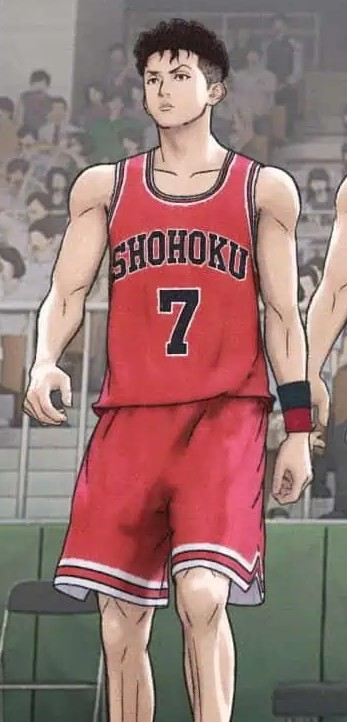
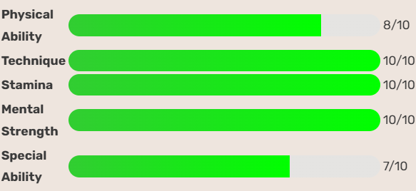

The Quick Playmaker
Ryota Miyagi, the heart and soul of Shohoku’s offense, is known for his incredible speed, sharp reflexes, and court awareness. Despite being the shortest player on the team, he makes up for it with lightning-fast drives, tight ball-handling, and smart playmaking. Off the court, Ryota carries emotional scars from the loss of his older brother, which fuels his determination and resilience. His loyalty to his teammates and quiet leadership make him the steady anchor of the team’s fast-paced attack.